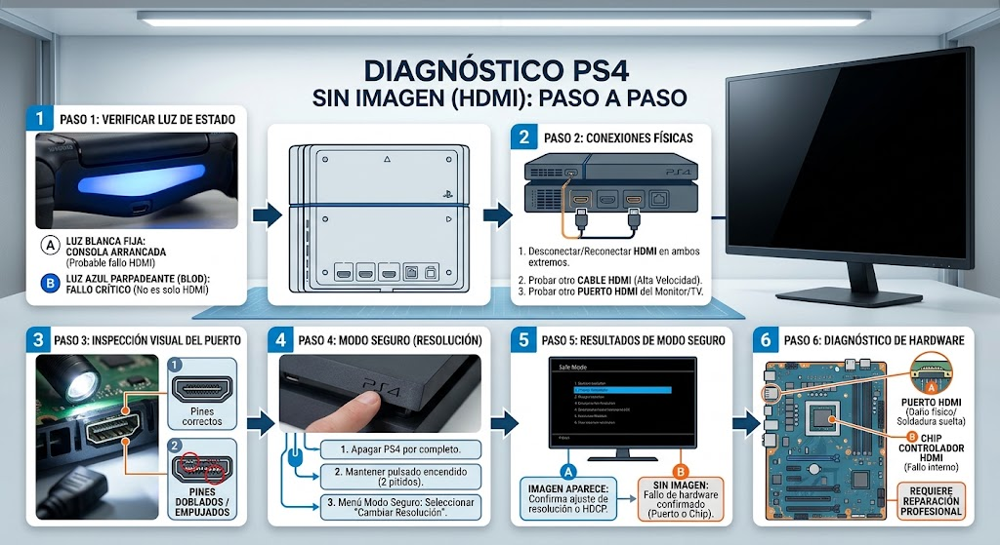
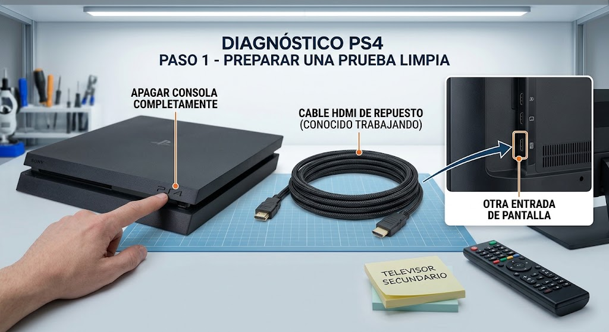
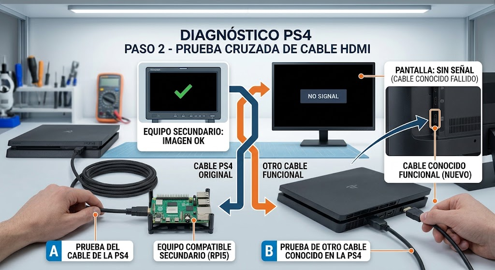
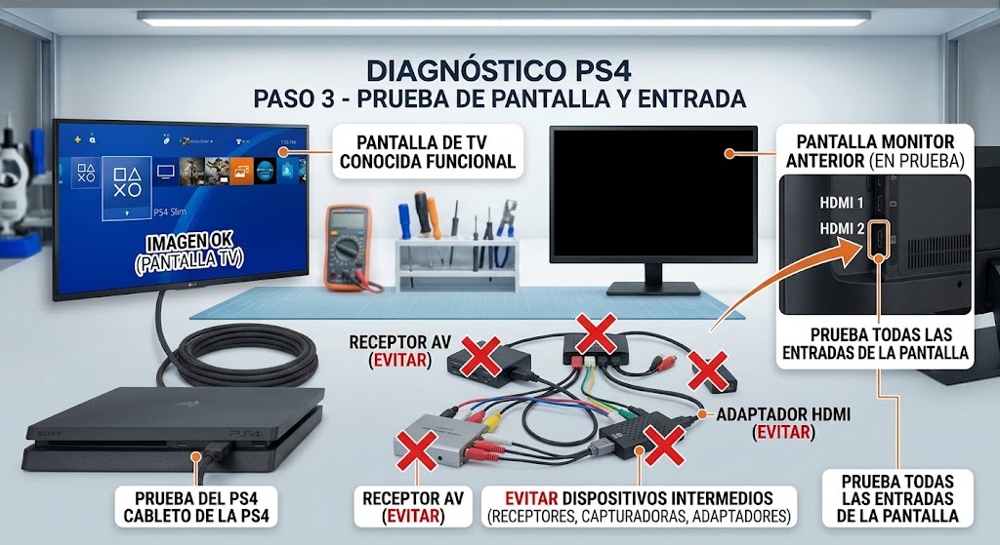
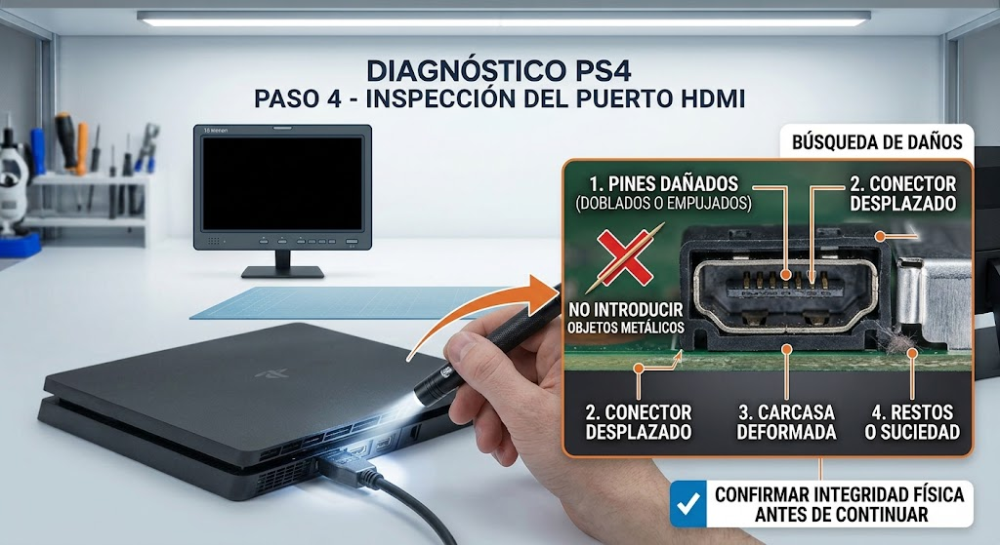
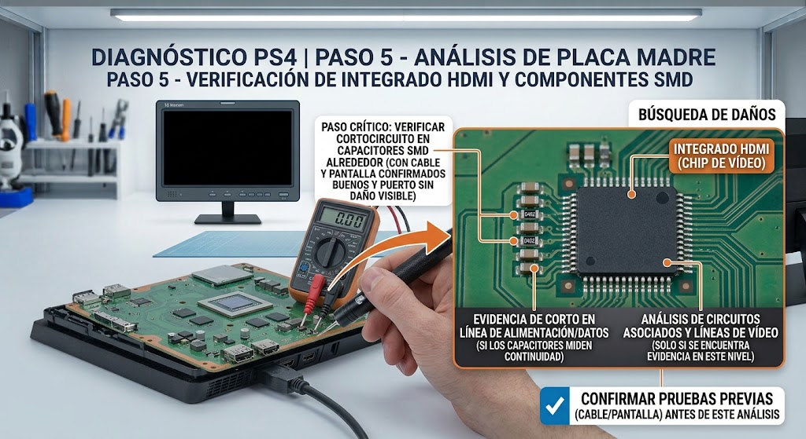

Introducción

La meta es llegar a una hipótesis con evidencia. No se trata de desmontar por desmontar: cada paso elimina una causa posible y prepara el siguiente.
Antes de empezar: seguridad
Retira alimentación y periféricos antes de abrir. No trabajes con una fuente de red abierta ni realices mediciones energizadas si no tienes formación e instrumental apropiados.
- Trabaja sobre una superficie limpia, seca y bien iluminada.
- Organiza tornillos y conectores por etapa.
- FotografÃa conexiones antes de desconectarlas cuando desmontes.
- No fuerces una cubierta: una resistencia inesperada suele indicar una fijación pendiente.
Herramientas y material
Diagnóstico paso a paso
Preparar una prueba limpia
Apaga la consola. Ten a mano otro cable HDMI conocido, otra entrada de la pantalla y, si es posible, otro televisor/monitor.

Qué hacer
- Lee el sÃntoma completo antes de desmontar.
- Realiza una sola prueba y anota el resultado.
- Si el resultado no coincide, vuelve al paso anterior y no sustituyas piezas todavÃa.
Una prueba cruzada evita atribuir el fallo al puerto demasiado pronto.
Resultado esperadoSi la prueba es correcta, continúa. Si no lo es, conserva el resultado y sigue la rama de diagnóstico correspondiente.
Probar el cable
Prueba el cable de la PS4 en otro equipo compatible y después otro cable conocido en la PS4.

Qué hacer
- Lee el sÃntoma completo antes de desmontar.
- Realiza una sola prueba y anota el resultado.
- Si el resultado no coincide, vuelve al paso anterior y no sustituyas piezas todavÃa.
Si falla un solo cable, no desmontes la consola.
Resultado esperadoSi la prueba es correcta, continúa. Si no lo es, conserva el resultado y sigue la rama de diagnóstico correspondiente.
Probar pantalla y entrada
Cambia de entrada HDMI y, si es posible, de pantalla. Evita receptores, capturadoras o adaptadores durante el diagnóstico inicial.

Qué hacer
- Prueba cable y pantalla conocidos.
- Inspecciona el conector con el equipo apagado.
- Solo después pasa a diagnóstico de placa.
Si otra pantalla funciona, la consola puede estar bien.
Resultado esperadoSi la prueba es correcta, continúa. Si no lo es, conserva el resultado y sigue la rama de diagnóstico correspondiente.
Inspeccionar el puerto
Con la consola apagada, ilumina el conector. Busca carcasa deformada, conector desplazado, restos o pines dañados. No introduzcas objetos metálicos.

Qué hacer
- Lee el sÃntoma completo antes de desmontar.
- Realiza una sola prueba y anota el resultado.
- Si el resultado no coincide, vuelve al paso anterior y no sustituyas piezas todavÃa.
Un daño mecánico visible cambia el diagnóstico hacia el conector.
Resultado esperadoSi la prueba es correcta, continúa. Si no lo es, conserva el resultado y sigue la rama de diagnóstico correspondiente.
Pasar a placa solo con evidencia
Si cable y pantalla son correctos y el puerto no presenta daño visible, el siguiente nivel es diagnóstico de las lÃneas de vÃdeo y circuitos asociados.

Qué hacer
- Lee el sÃntoma completo antes de desmontar.
- Realiza una sola prueba y anota el resultado.
- Si el resultado no coincide, vuelve al paso anterior y no sustituyas piezas todavÃa.
No reemplaces un IC HDMI sin mediciones que justifiquen esa hipótesis.
Resultado esperadoSi la prueba es correcta, continúa. Si no lo es, conserva el resultado y sigue la rama de diagnóstico correspondiente.
Una prueba negativa no es un fracaso: es información. Registra qué se probó, con qué pieza o condición y qué cambió. Evita reemplazar varios componentes al mismo tiempo.
Tabla rápida de diagnóstico
| SÃntoma | Primera comprobación | Siguiente hipótesis |
|---|---|---|
| Sin señal con varios cables/pantallas | Puerto visualmente sano | Pasar a diagnóstico de placa |
| Cable funciona en otros equipos | PS4 falla con varios cables | Prioridad: consola/HDMI |
| Puerto deformado | Cambio fÃsico visible | Prioridad: reparación mecánica |
Fuentes, licencias y referencias
- Fuente de imagen / referencia — revisa la licencia indicada en la ficha antes de redistribuir.
- Creative Commons BY-SA 4.0 cuando aplique a la imagen.
- iFixit / documentación de reparación como referencia técnica para PlayStation cuando corresponda.